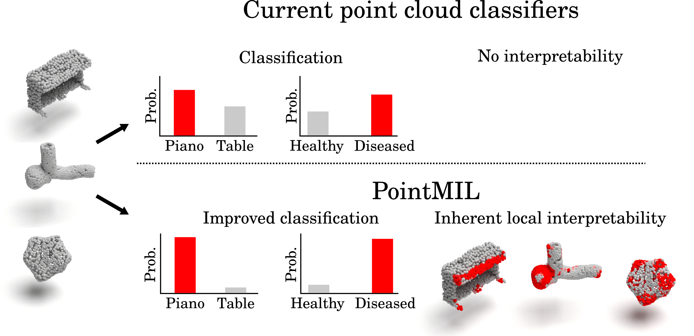

Interpretable Point‑Cloud Classification using Multiple Instance Learning
ICCV 2025 Highlight
1Sentinal4D 2Institute of Cancer Research 3Imperial College London 4University College London
Accurate
Point‑level explanations
MIL pooling (Instance / Attention / Additive / Conjunctive)

Interactive demo
Load a sample point cloud and visualise PointMIL's point‑level importance (red = more important). Toggle class, palette, and thresholds. Drop your own .json files that follow the schema below.
Controls
JSON schema
{ points: [[x,y,z],...], classes: ["..."], scores: { "Class A": [0..1 per point], ... } }
Pipeline gif & quick description
Gif placeholder

Replace with your generated gif (e.g. assets/pointmil_flow.gif) and update the src.
PointMIL unifies common point‑cloud backbones with Multiple Instance Learning (MIL) pooling to provide built‑in, point‑level interpretability while improving classification performance. Instance, Attention, Additive, and Conjunctive pooling variants yield explanations directly from the model without post‑hoc saliency.
- State‑of‑the‑art performance on IntrA with mACC and F1 while producing local explanations.
- Interpretations highlight class‑discriminative regions (e.g. aneurysm bulges, RBC concavities, drug‑induced protrusions).
- Contextual attention smooths sparse explanations by sharing neighbourhood evidence.
Citation
@inproceedings{DeVries2025Interpretable,
title={Interpretable Point Cloud Classification using Multiple Instance Learning},
author={{De Vries}, Matt and Naidoo, Reed and Fourkioti, Olga and Dent, Lucas and Curry, Nathan and Dunsby, Cristopher and Bakal, Chris},
booktitle={International Conference on Computer Vision (ICCV)},
year={2025}
}